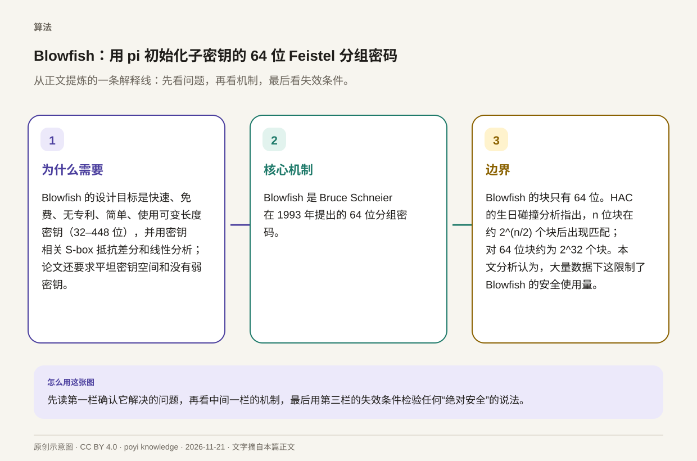
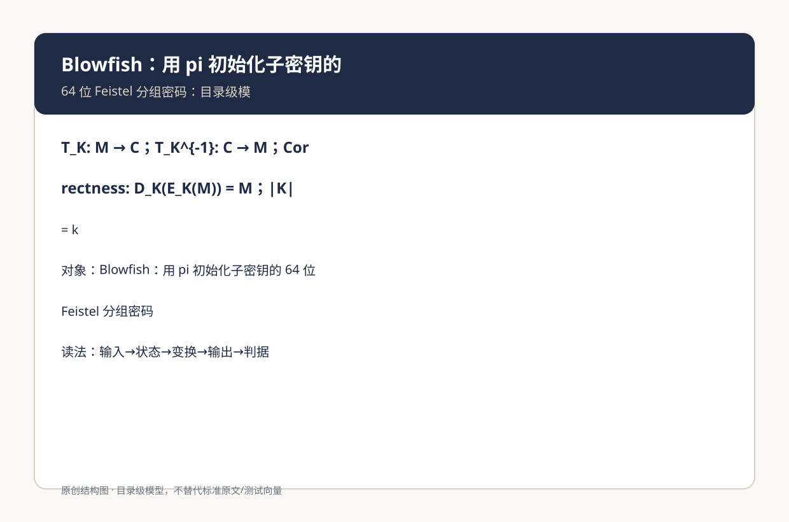

原理与机制
算法：Blowfish 分组密码（Blowfish）。Blowfish 是 Bruce Schneier 在 1993 年提出的 64 位分组密码。它使用 16 轮 Feistel 网络，密钥长度最多 448 位；子密钥由 18 项（P1–P18）32 位 P 数组和四个 256 项 32 位 S-box 组成。F 函数把 32 位输入分成四个 8 位字节 a、b、c、d：
F(x) = ((S1[a] + S2[b] mod 2^32) XOR S3[c]) + S4[d] mod 2^32
加密把 64 位块分成 xL、xR。16 轮中每轮做：
xL = xL XOR Pi
xR = xR XOR F(xL)
交换 xL 和 xR
16 轮后撤销最后一次交换，再做白化：
xR = xR XOR P17
xL = xL XOR P18
解密与加密相同，但按相反顺序使用 P18..P1。P 数组和四个 S-box 的初始值来自 pi 的十六进制数字——源文的原话是「the hexadecimal digits of pi (less the initial 3」。例如 P1=243f6a88、P2=85a308d3、P3=13198a2e、P4=03707344；完整的 P/S 表共 1042 个 32 位字，即 4168 字节。密钥扩展先用循环重复的密钥字异或 P 数组，再用当前算法反复加密全零块，依次替换 P1..P18 和四个 S-box；总共 521 次迭代。论文还指出，测试一个密钥需要 522 次加密，给暴力搜索增加约 2^9 步。Blowfish 的密钥可从 32 位到 448 位。密钥循环使用，因此短密钥「at least one equivalent longer key」（至少存在一个等价的更长密钥）：若 A 是 64 位密钥，则 AA、AAA 等产生相同子密钥。

为什么重要
Blowfish 的设计目标是快速、免费、无专利、简单、使用可变长度密钥（32–448 位），并用密钥相关 S-box 抵抗差分和线性分析；论文还要求平坦密钥空间和没有弱密钥。它不使用 DES 的位级置换，而是在 32 位字上使用异或、加法和表查找，适合 32 位处理器。它的数据加密很快，但密钥扩展很重：每个新密钥要执行 521 次加密。论文把它定位为公开、无专利的候选算法，而不是已发布标准；本文分析认为，需要频繁更换密钥的场景要权衡这一初始化成本。Blowfish 仍然是 64 位块。生日碰撞边界约为 2^32 个块，处理大量数据时会限制安全使用量。本文判断它适合作为历史和教学案例，不应默认用于新设计；新设计通常需要更大的块和 AEAD。
应用与实例
论文说 Blowfish 只适合「where the key does not change often」（密钥不常变化）的场景，例如「a communications link or an automatic file encryptor」（通信链路或自动文件加密器）；在具备较大数据缓存的 32 位处理器（如 Pentium 和 PowerPC）上，它明显快于 DES，但不满足所有新标准需求。Internet-Draft 的 §4 给出 34 条 8 字节密钥的 ECB 向量。零密钥、零明文向量是：
K = 0000000000000000
P = 0000000000000000
C = 4ef997456198dd78
K = 3000000000000000
P = 1000000000000001
C = 7d856f9a613063f2
34 条向量用于加密检查；本文对每条都执行加密，并验证解密回到原明文。由于密钥循环，短密钥和它的重复形式等价：
K = 01234567
K = 0123456701234567
P = 1111111111111111
C = ea55f49044fe2b24

边界与攻击面
Blowfish 的块只有 64 位。HAC 的生日碰撞分析指出，n 位块在约 2^(n/2) 个块后出现匹配；对 64 位块约为 2^32 个块。本文分析认为，大量数据下这限制了 Blowfish 的安全使用量。### 密钥扩展成本
521 次加密的密钥扩展让更换密钥变得昂贵。论文把它视为对暴力搜索的额外成本；本文分析认为，在高密钥周转的系统中这也是实际负担，子密钥应按密钥材料保护，不能把 4168 字节的表当成公开数据。### 密钥相关 S-box 与侧信道
密钥相关 S-box 提高了差分和线性分析的难度，但实现仍要按字节索引四个表；本文分析认为，缓存、时序或故障注入可能泄露与密钥相关的访问模式。本文的教学实现不是常量时间，也不测试侧信道。### 无完整性
Blowfish 只定义分组密码，不提供完整性或认证。翻转密文会改变对应明文，但 Blowfish 本身无法检测；本文建议需要认证时使用 AEAD 或加密后再 MAC。本文的教学实现演示固定向量；本批次验证脚本执行 34 条 ECB 向量、4/8/16/24/32/56 字节密钥往返、pi 表检查和一位差异。它不生成密钥、不做常量时间处理、不实现工作模式、协议、密钥管理或侧信道防护，不能用于生产环境。
历史与背景
Blowfish 在 1993 年 FSE 论文中提出，1994 年由 Springer 出版，并以 Dr.Dobb's Journal 1994 年文章和公有领域发布。论文把 DES 视为「nearing the end of its useful life」（接近其有效寿命的终点），目标是提供一个免费、无专利、可在 32 位处理器上快速运行的新标准候选。后来的 Twofish 是另一个算法，不是 Blowfish；Twofish、DES、AES 和 Blowfish 都是各自独立的实体。
逐步示例与核验
复算示例
取标准或公开测试向量中的一组参数，按“输入—执行—输出”记录：先写出该条目的形式式 (C=E_K(P;r),\qquad P=D_K(C))；再按规范顺序执行每一步，最后把输出与独立实现或标准向量逐字节对照。若没有可引用的数值向量，就只记录结构步骤，不伪造输出。
参考出处
- Wikipedia search entry for Blowfish 分组密码. https://zh.wikipedia.org/w/index.php?search=Blowfish%20%E5%88%86%E7%BB%84%E5%AF%86%E7%A0%81
- Handbook of Applied Cryptography (Menezes, van Oorschot, Vanstone). https://www.cacr.math.uwaterloo.ca/hac/